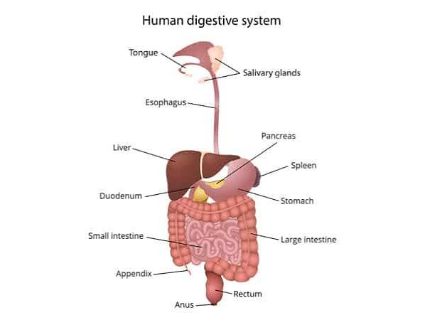

ระบบย่อยอาหาร

ระบบย่อยอาหารทำหน้าที่เปลี่ยนอาหารที่เรารับประทานเข้าไปให้กลายเป็นสารอาหารที่มีขนาดเล็กเพียงพอที่จะดูดซึมเข้าสู่ร่างกายได้ สารอาหารเหล่านี้จะถูกนำไปใช้ในการสร้างพลังงาน ช่วยในการเจริญเติบโต สร้างและซ่อมแซมเนื้อเยื่อ รวมถึงช่วยให้ระบบต่าง ๆ ของร่างกายสามารถทำงานได้ตามปกติ การย่อยอาหารมีทั้ง การย่อยเชิงกล เช่น การเคี้ยวอาหาร และ การย่อยเชิงเคมี ซึ่งอาศัยเอนไซม์และน้ำย่อยในการเปลี่ยนสารอาหารให้มีขนาดเล็กลง
กระบวนการย่อยอาหารเริ่มต้นที่ ปาก ฟันจะบดและเคี้ยวอาหารให้มีขนาดเล็กลง ในขณะที่น้ำลายจะช่วยให้อาหารเปียกและมีเอนไซม์ที่เริ่มย่อยแป้ง จากนั้นอาหารจะถูกกลืนและเคลื่อนผ่านหลอดอาหารเข้าสู่กระเพาะอาหาร กระเพาะอาหารจะบีบตัวเพื่อคลุกเคล้าอาหารและหลั่งน้ำย่อยที่ช่วยย่อยโปรตีน หลังจากนั้นอาหารจะเคลื่อนเข้าสู่ ลำไส้เล็ก ซึ่งเป็นบริเวณที่มีการย่อยอาหารต่ออย่างสมบูรณ์และเป็นบริเวณที่มีการดูดซึมสารอาหารเข้าสู่กระแสเลือดมากที่สุด
ตับ ตับอ่อน และถุงน้ำดีเป็นอวัยวะที่ช่วยสนับสนุนการย่อยอาหาร โดย ตับสร้างน้ำดี ซึ่งช่วยทำให้ไขมันแตกตัวเป็นหยดเล็ก ๆ เพื่อให้ย่อยได้ง่ายขึ้น ส่วนตับอ่อนสร้างเอนไซม์หลายชนิดที่ช่วยย่อยคาร์โบไฮเดรต โปรตีน และไขมัน หลังจากลำไส้เล็กดูดซึมสารอาหารแล้ว กากอาหารจะเข้าสู่ ลำไส้ใหญ่ ซึ่งทำหน้าที่ดูดซึมน้ำและเกลือแร่บางส่วน ก่อนที่จะรวมตัวเป็นอุจจาระและถูกขับออกจากร่างกายทางทวารหนัก
การย่อยอาหารสามารถแบ่งออกเป็นการย่อยเชิงกลและการย่อยเชิงเคมี โดยการย่อยเชิงกลเป็นการทำให้อาหารมีขนาดเล็กลงโดยไม่เปลี่ยนแปลงชนิดของสาร เช่น การบดเคี้ยวของฟันและการบีบตัวของกระเพาะอาหาร ส่วนการย่อยเชิงเคมีเป็นการใช้เอนไซม์ในการเปลี่ยนโมเลกุลของสารอาหารขนาดใหญ่ให้กลายเป็นโมเลกุลขนาดเล็กที่สามารถดูดซึมเข้าสู่ร่างกายได้
สารอาหารแต่ละชนิดจะถูกย่อยแตกต่างกัน คาร์โบไฮเดรต จะถูกย่อยจนกลายเป็นน้ำตาลโมเลกุลเล็ก เช่น กลูโคส โปรตีน จะถูกย่อยจนกลายเป็นกรดอะมิโน และ ไขมัน จะถูกย่อยเป็นกรดไขมันและกลีเซอรอล สารอาหารที่ผ่านการย่อยแล้วส่วนใหญ่จะถูกดูดซึมผ่านผนังลำไส้เล็กเข้าสู่เลือดหรือระบบน้ำเหลือง เพื่อนำไปใช้ในส่วนต่าง ๆ ของร่างกาย
ภายในลำไส้เล็กมีโครงสร้างขนาดเล็กที่เรียกว่า วิลลัสและไมโครวิลลัส ซึ่งช่วยเพิ่มพื้นที่ผิวสำหรับการดูดซึมสารอาหาร ทำให้ร่างกายสามารถดูดซึมสารอาหารได้อย่างมีประสิทธิภาพ หลังจากสารอาหารถูกดูดซึมแล้ว เลือดจะลำเลียงสารอาหารไปยังตับและส่วนต่าง ๆ ของร่างกาย เพื่อควบคุมและนำไปใช้ในกระบวนการต่าง ๆ เช่น การสร้างพลังงาน การเจริญเติบโต และการซ่อมแซมเซลล์
การทำงานของระบบย่อยอาหารยังเกี่ยวข้องกับจุลินทรีย์ที่อาศัยอยู่ในลำไส้ ซึ่งมีส่วนช่วยในกระบวนการย่อยอาหารและการทำงานของร่างกายบางอย่าง จึงเห็นได้ว่าระบบย่อยอาหารไม่ได้ทำหน้าที่เพียงย่อยอาหารเท่านั้น แต่ยังเกี่ยวข้องกับการดูดซึมสารอาหารและการรักษาสมดุลของร่างกายอีกด้วย